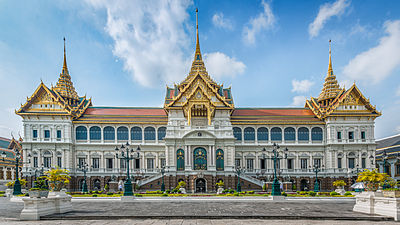
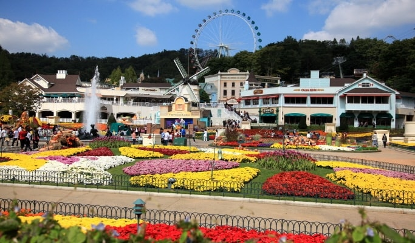

A beautiful palace that was built in 1395. It was once destroyed by a fire during a war, but the palace was built again by a leader named Heungseondaewongun. if you want more infomation, click here.

Namiseom was formed in a construction, It is a half moon shaped isle and a honorable General Nami was buried there. Before he died, he led to a victorious fight against the rebels. If you want more information about this tourist spot, click here.
 here.
here.

A park covering an area of 9,157,000㎡, this Grand Park has themed areas for education, nature, and amusement. For more information click here.
id="grandpark">< img src="grandpark.png" />
Food Trip
| Cuisines | Description | ||||
|---|---|---|---|---|---|
| Kalbi | A dish that is made with beef short ribs. | Bibimbap | A dish that is served in a bowl of white rice and that is mixed with different vegetables. | Patbingsu | Patbingsu is shaved ice mixed with condensed milk, chopped fruit, and red beans. |